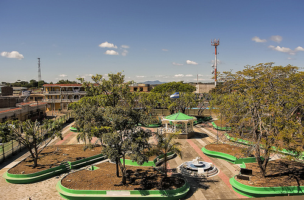
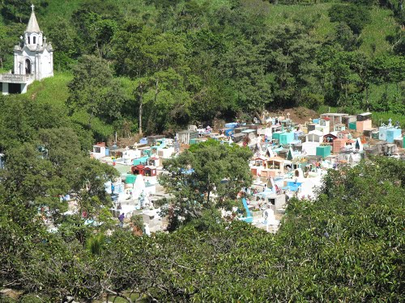
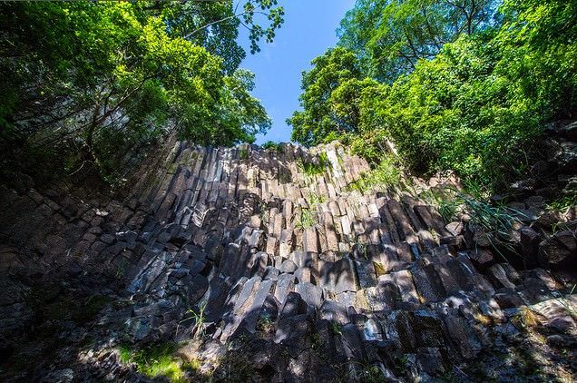

Geografia

Cabañas es un departamento de la zona paracentral de El Salvador. Su cabecera departamental es Sensuntepeque. Esta región tiene muchas reservas naturales. El departamento fue nombrado en honor del político centroamericanista hondureño, José Trinidad Cabañas. Según uno de sus biógrafos, el general hondureño José Trinidad Cabañas; "era centroamericano por sus ideales y aspiraciones a las que dedicó su vida." Esto inspiró a los legisladores del país quienes, queriendo honrar la memoria de este valeroso soldado bautizaron con su nombre este departamento el 10 de febrero de 1873 por medio de Decreto Legislativo. Los historiadores afirman que el General Cabañas, peleó al lado del General Francisco Morazán, a quien logró rescatar el 14 de septiembre de 1842, cuando se encontraba situado en San José, Costa Rica. En 1852, el Gral. Cabañas asumió la presidencia de Honduras y luego fue derrocado. Estuvo también al servicio del Gral. Gerardo Barrios, de quien era cuñado. Después de la trágica muerte del patriota Barrios, en 1865, José Trinidad Cabañas se retiró en condiciones precarias, pero con dignidad a Honduras, donde murió el año de 1871. El actual gobernador departamental es el médico Vicente Rovira Guzmán nombrado en julio de 2009, por el presidente de El Salvador, Mauricio Funes. El ex gobernador departamental por los años 1994-2003, José Arturo Vásquez Machado, fue asesinado el 9 de noviembre de 2009 en la capital San Salvador.
Turismo

El Departamento salvadoreño de Cabañas está situado en el centro norte del país. Colinda al norte con el departamento de Chalatenango, al noroeste con Honduras, al este con el departamento de San Miguel, al sur con San Vicente, y al oeste con Cuscatlán. Destacan en el departamento el río Lempa (88.0 Km), los embalses del Cerrón Grande y la presa hidroeléctrica 5 de Noviembre; los cerros La Cruz (921.0 msnm) y el Ocotillo (1,014 msnm). El departamento de Cabañas es productor de granos básicos, café, caña de azúcar, añil, pastos, ajonjolí, plantas hortenses y frutícula; se dedica a la crianza de ganado vacuno, porcino, caballar, asnal, mular y caprino; a la industria de alfarería, jarcia, lácteos y a la explotación de minerales tales como el oro, la plata y el cobre. También tiene interés la población de Ilobasco y su producción artesanal alfarera.
División administrativa

Lugares turísticos de Cabañas
